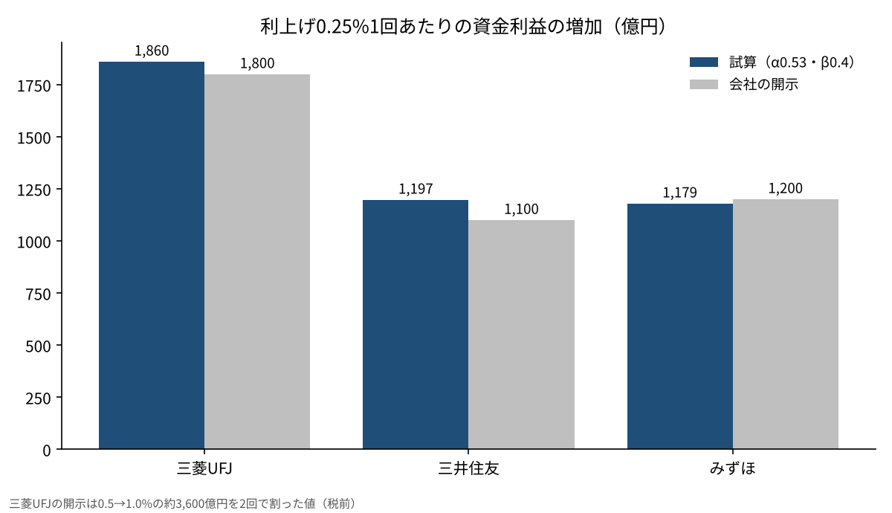
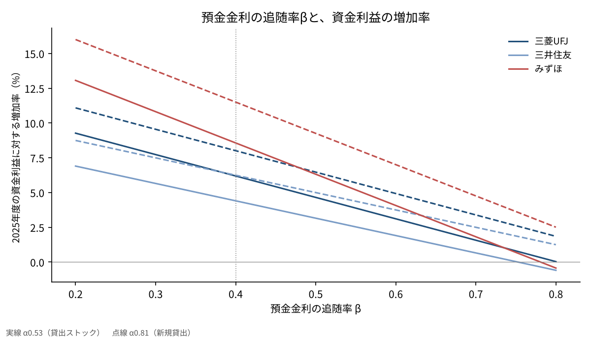

日銀の0.25%の利上げで、メガバンクの金利収入は何%増えるのか
2026年10月30日、日本銀行は政策金利を1.25%程度に据え置いた。9人の政策委員のうち1人は1.5%への利上げを提案し、否決されている。
次の0.25%の利上げは、いつかは来る前提で市場が動いている。そこで本稿の問いを一つに絞る。
政策金利が0.25%上がると、三菱UFJ・三井住友・みずほの3メガバンクの資金利益は、それぞれ何%増えるのか。
問いと背景
資金利益とは、貸出や有価証券から受け取る利息から、預金などに払う利息を引いた額である。銀行の本業の稼ぎの中心にあたる。政策金利が上がると、受け取る利息も払う利息も増えるが、増え方の速さが違う。この速さの差が、利上げが銀行の利益を押し上げる理由になる。
日銀は2024年3月にマイナス金利を解除し、その後、2024年7月に0.25%、2025年1月に0.5%、2025年12月に0.75%、2026年6月に1.0%、2026年9月に1.25%へと金利を上げてきた[1]。10月30日の会合は据え置きで、8対1の賛成多数だった[1]。
3メガのうち2社は、0.25%の利上げ1回あたりの効果を開示している。三井住友は資金利益が初年度に約1,100億円、5年目に約1,500億円増えるとし[2]、みずほは金利収支が年間で約1,200億円増えるとしている[3]。3メガの2025年度の純利益は、三菱UFJが2兆4,272億円、三井住友が1兆5,830億円、みずほが1兆2,486億円だった[2][3][5]。三菱UFJは0.25%あたりの数字を出しておらず、政策金利が0.5%から1.0%へ上がる間の税前利益への影響を約3,600億円と示している[4]。
ここで使う専門用語を一つ定義しておく。預金金利の追随率（β）とは、政策金利が1上がったとき、預金金利がどれだけ上がるかの比率である。βが小さいほど、銀行の取り分は大きくなる。同じように、貸出金利の追随率（α）は、政策金利が1上がったとき、貸出金利がどれだけ上がるかの比率である。αが大きいほど、銀行の受け取る利息は速く増える。
日銀の当座預金への付利も、この計算では大事な役割を持つ。付利とは、銀行が日銀に預けているお金につく金利で、現在は政策金利と同じ1.25%に置かれている[1]。預金を集めても貸し出せずに余ったお金は、日銀に置いておくだけで政策金利と同じ利息を生む。余ったお金が大きい銀行ほど、利上げの恩恵を早く受けやすい。
データと方法
使うのは、各社が開示した2025年度（2026年3月期）の資金利益と、国内の預金・貸出の残高である[2][3][5]。三菱UFJは国内預金185.2兆円・国内貸出78.1兆円、三井住友銀行は国内預金135.9兆円・国内貸出71.6兆円、みずほは国内円預金123.9兆円・国内貸出57.8兆円になる。
利上げ1回あたりの資金利益の増加は、次の3つの和で近似する。
(1) 貸出：貸出残高×0.25%×貸出金利の追随率（α）
(2) 余った預金：預金から貸出を引いた残りを日銀の当座預金に置くとし、その分は政策金利と同じだけ利回りが上がる（付利は政策金利と同じ水準）
(3) 預金：預金残高×0.25%×預金金利の追随率（β）を差し引く
αとβの基準値は、実際の金利の動きから置いた。3メガの普通預金金利は、政策金利の0.25%の上げに対して0.10%ずつ上がってきた（2025年1月・12月、2026年6月・9月）[6]。βの基準は0.4とする。貸出は、日銀の統計で国内銀行の貸出約定平均金利（ストック）が、マイナス金利の解除から2026年8月までに0.72%上がった[7]。同じ期間の政策金利の上げ幅1.35%で割った0.53をαの基準とする。新規の貸出に限ると、同じ期間に0.683%から1.782%へ1.10%上がっており[7]、比率は0.81になる。既にある貸出は、固定金利のものから順に入れ替わるため、ストックの上がり方は新規より遅い。
預金側の数字も見ておく。全国の銀行の普通預金の平均金利は、2024年2月の0.001%から2026年10月には0.331%になった[7]。1年ものの定期預金（300万円未満）は、0.005%から0.486%に上がっている[7]。
この式は、三井住友の開示した前提（円貨の貸出約70兆円・預金約130兆円）に当てはめると、約1,128億円になる。会社が示した初年度の約1,100億円とほぼ一致するので、式の形は大きく外れていないと考えた。
結果
基準（α＝0.53、β＝0.4）での試算は次のとおりである。表の増加率は、利上げから1年目の効果を示している。
| 銀行 | 国内預金 | 国内貸出 | 資金利益の増加（試算） | 2025年度の資金利益 | 増加率 | 会社の開示 |
|---|---|---|---|---|---|---|
| 三菱UFJ | 185.2兆円 | 78.1兆円 | 約1,860億円 | 30,062億円 | 6.2% | 0.5→1.0%で約3,600億円（税前） |
| 三井住友 | 135.9兆円 | 71.6兆円 | 約1,197億円 | 27,196億円 | 4.4% | 初年度約1,100億円 |
| みずほ | 123.9兆円 | 57.8兆円 | 約1,179億円 | 13,770億円 | 8.6% | 年間約1,200億円 |
問いへの答えは、基準のケースで、資金利益がおよそ4〜9%増えるという数字になる。三菱UFJの約1,860億円は、0.5%幅で約3,600億円という同社の開示を2回の利上げで割った約1,800億円にも近い。
増加率に差が出るのは、預金と貸出の差の大きさが違うからである。三菱UFJは国内預金のうち100兆円を超える額が貸出に回っておらず、その分が利上げの効果を大きくしている。みずほは預金に対して資金利益がもともと小さく、同じ0.25%でも増え方の比率が高く出る。三井住友は貸出の比率が高く、余った預金の取り分が相対的に小さい。その代わり、三井住友は5年目に約1,500億円まで効果が増えると開示している[2]。固定金利の貸出が、高い金利の貸出へ入れ替わっていくからである。
税金を30%と仮定して税引き後に直すと、増加額は三菱UFJで約1,302億円、三井住友で約838億円、みずほで約825億円になる。2025年度の純利益に対しては、それぞれ約5.4%・5.3%・6.6%にあたる。利上げ1回で、純利益が5〜7%ほど上乗せされる計算になる。

感度分析
結果は、βとαの置き方で大きく変わる。βを0.3・0.4・0.5・0.7、αを0.53と0.81（新規の貸出金利の追随率）で動かした[7]。
| 条件 | 三菱UFJ | 三井住友 | みずほ |
|---|---|---|---|
| α0.53・β0.3 | 7.7% | 5.7% | 10.8% |
| α0.53・β0.4（基準） | 6.2% | 4.4% | 8.6% |
| α0.53・β0.5 | 4.6% | 3.2% | 6.3% |
| α0.53・β0.7 | 1.6% | 0.7% | 1.8% |
| α0.81・β0.4 | 8.0% | 6.2% | 11.5% |
| α0.81・β0.7 | 3.4% | 2.5% | 4.8% |
βが0.4から0.7へ上がると、増加率は3社とも半分以下になる。逆に、貸出の金利が新規の貸出並みに速く上がれば、増加率は2〜3%ほど上乗せされる。8通りのうち最も低いケースは0.7%、最も高いケースは13.8%だった。
預金の追随率は、これまでの利上げでは0.4前後で動いてきた。ただ、全国の銀行の普通預金の平均金利は、政策金利の上げ幅1.35%に対して0.33%しか上がっておらず、比率では約24%にとどまる[7]。定期預金は約36%である。預金の中身によって、追随の速さはかなり違う。普通預金の多い銀行ほどβは低く、定期預金の比率が上がるほどβは高くなる。
αの側にも幅がある。日銀の金融システムレポートは、市場の金利に連動する貸出の比率が高い大手行ほど、既にある貸出の金利の上がり方が大きいと分析している[8]。3メガは中小の銀行より、αが基準の0.53より高い側に寄っている可能性がある。

考察
反対の見方もある。金利が上がると、預金者は普通預金から定期預金や投資信託へお金を移す。そうなると、銀行が払う利息は式よりも速く増え、βは0.4より高くなる。民間の調査でも、政策金利の0.25%の上げに対して普通預金は0.1%、変動金利の住宅ローンは0.25%上がる前提が置かれている[9]。みずほの経営陣も、定期預金のコストの負担から、効果は年間1,200億円に少し届かない見込みだと説明している[3]。
もう一つは、預金そのものが流出するおそれである。2026年11月2日からは、3メガの普通預金金利が0.5%に上がる。これは1992年8月以来の水準と報じられた[6]。金利の高い他の金融機関や国債へお金が移れば、式の前提にある預金の残高が減る。
この試算には限界もある。第1に、余った預金をすべて日銀の当座預金に置くと仮定したが、実際には国債や海外の資産にも振り分けられている。第2に、国内の預金・貸出の残高は会社ごとに範囲が違い、厳密には比べられない。第3に、貸出の金利が上がることで、借り手の倒産が増えるおそれは入れていない。第4に、海外の金利や為替の動きも入れていない。3社とも海外の貸出が大きく、全体の利益はその影響も受ける。
答え合わせの基準は、2026年11月中旬に出る3社の中間決算になる。9月の1.25%への利上げを受けて、通期の資金利益の見通しがどれだけ上方修正されるかを見れば、βとαの実際の水準に近づける。
結論
日銀の0.25%の利上げ1回で、3メガの資金利益は、基準のケースでおよそ4〜9%増えるという試算になった。金額にすると、1社あたり約1,200億〜1,900億円である。
ただし、この数字は預金金利の追随の速さに大きく左右される。βが0.7まで上がれば、増加率は1〜2%前後まで下がる。利上げが銀行の追い風になるかどうかは、金利の水準より、預金者がどこへお金を動かすかで決まる面が大きい。
僕はこう見ている
僕は三菱UFJ・りそな・三井住友トラスト・三井住友の4行の株を持っている。買ったのは長期金利が0.75%〜1%くらいの時期で、長期金利が2%を超えたら読みは当たったと思っている。10月の利上げもありうると見ていたが、結果は据え置きだった。
売る条件は、金利が下がっていく局面に入ったと判断したときで、金利が下がらないうちは持つ。だから今回の据え置きでも、4行の持ち方は変えない。銀行株で見るのは決算より、日銀の判断と長期金利だけにしている。
出典
- 日本銀行「当面の金融政策運営について」2026年10月30日 https://www.boj.or.jp/mopo/mpmdeci/mpr_2026/k261030a.pdf
- 三井住友フィナンシャルグループ「2025年度決算 投資家説明会資料」2026年5月18日 p.9 https://www.smfg.co.jp/investor/financial/latest_statement/2026_3/2026_fy_setumei.pdf
- みずほフィナンシャルグループ「2025年度決算 会社説明会資料」2026年5月19日 p.27・p.36 https://www.mizuho-fg.co.jp/investors/financial/briefing/pdf/20260519_1.pdf
- 三菱UFJフィナンシャル・グループ「MUFGの強み」2026年1月 p.26 https://www.mufg.jp/dam/ir/investors/seminar/pdf/slides260121_ja.pdf
- 三菱UFJフィナンシャル・グループ「2025年度 決算ハイライト」2026年5月15日 https://www.mufg.jp/dam/ir/fs/2025/pdf/highlights2603_ja.pdf
- みずほ銀行「円普通預金金利の改定について」2026年9月18日 https://www.mizuhobank.co.jp/release/pdf/20260918_2release_jp.pdf
- 日本銀行 時系列統計データ検索サイト（預金・貸出関連の金利）2026年10月19日更新 https://www.stat-search.boj.or.jp/
- 日本銀行「金融システムレポート」2026年4月 https://www.boj.or.jp/research/brp/fsr/data/fsr260421a.pdf
- みずほリサーチ&テクノロジーズ 調査レポート 2026年6月8日 https://www.mizuhobank.co.jp/corporate/mhri/research/report/2026-0057/index.html
写真：Kate Branch、Mohamed Jamil Latrach（Unsplash）。図はYUKI CAPITALが作成
日々の数字と判断は、Xで記録している。